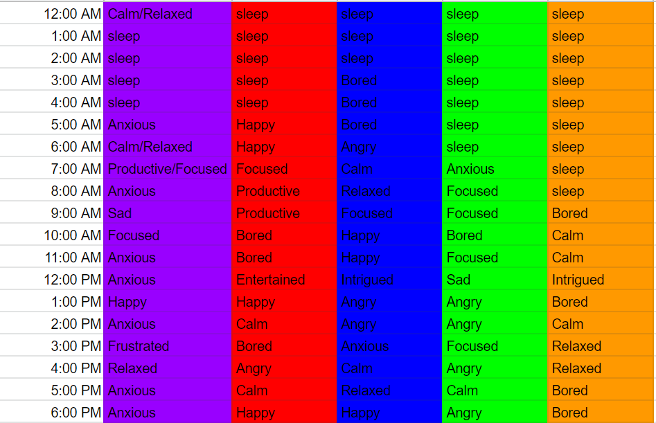

'Mapping the Invisible': 24-hour Temporal Maps of Emotional Progression
As the quarter came to a close the class was challenged to map invisible connections, phenomena that are not often seen or visualized. We chose to map our emotions and display them with spatial and temporal attributes. In order to compare our emotional states, we chose to record the emotions we experienced every hour, over the course of both a weekday (where we had work and/or school) and a day on the weekend.
We created a Google Sheet document that we would use to record emotions every hour on the two days, from midnight to midnight. Of the emotions that were common across all of our experiences we distilled to more base forms, so as to fit a reasonable diversity on the final visual.
With the recorded emotions, we created a circular diagram, where the center point represents midnight, and the circle's outer ring represents midnight of the next day. The circle was marked by rings, one for each hour, and slices of the circle were dedicated for each emotion. More "positive" emotions reside on the upper half of the circle, with more "negative" emotions opposite. Each of us chose a color of thread to represent ourselves, and using the collected data, we moved outwards towards the circumference. Emotional points are placed at the corresponding times, with threads connecting.
Upon finishing both visualizations, trends started emerging. Thursday appears more chaotic, with two people’s emotions staying more towards the negative side. There is a trend near the early evening with emotions being angry/frustrated, calm/relaxed, and some bored. Then in the late evening there is a shift to happy, calm/relaxed, and some productive/focused. With Thursday’s being a work/class day, having more chaotic emotions is to be expected.
Saturdays’ emotions tend to be more on the positive side, with most people touching productive/focused, happy, and calm/relaxed. While emotions for almost every color touches the negative side, they tend to go back towards the positive. With Saturdays’ being a weekend, emotions tending on the positive side were expected. With more days to record emotions, this project would offer a unique view into an emotional map with further trends potentially appearing.